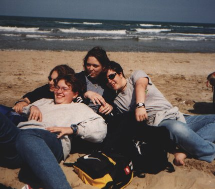
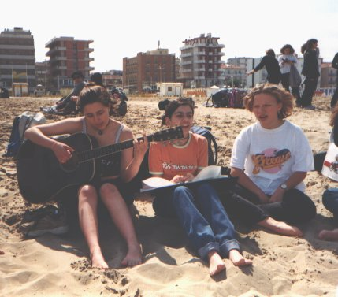

RELAX AL MARE |
Dopo l'esplorazione del centro storico di Rimini, abbiamo percorso parte del Parco Alcide Cervi (che attualmente ricopre un tratto del torrente Ausa ), preso il filobus n° 11 in Viale Amerigo Vespucci, dopo aver superato Marina Centro, Bellariva e Marebello, siamo scesi in località Rivazzurra alla fermata n° 27 e raggiunto il ristorante "Roxy Bar", conosciuto dalla mitica prof.ssa Alba Piolanti dove, dopo una bella scorpacciata, siamo corsi sulla spiaggia per goderci le fantastiche onde cristalline del Mar Adriatico, in piena stagione primaverile!

Chi in costume, chi senza scarpe e con i "pantaloni alla pescatora", chi non si azzardava nemmeno a sfiorare la sabbia (uno a caso ... Teo!), ma, bene o male, tutti si prestavano a passare quell'ora e mezza polleggiati ... pensate, niente spiegazioni, niente interrogazioni ... mare e sole, sole e mare! Ah, che "storia"!!
